X可以是唯一解，也可以是無解或無限。那樣的我們，究竟會選擇哪條路呢？哪一條路才是最好的？而所謂的『好』，是眾人認同的、誤打誤撞的、還是自己無悔的？
01
學生日常Student Life
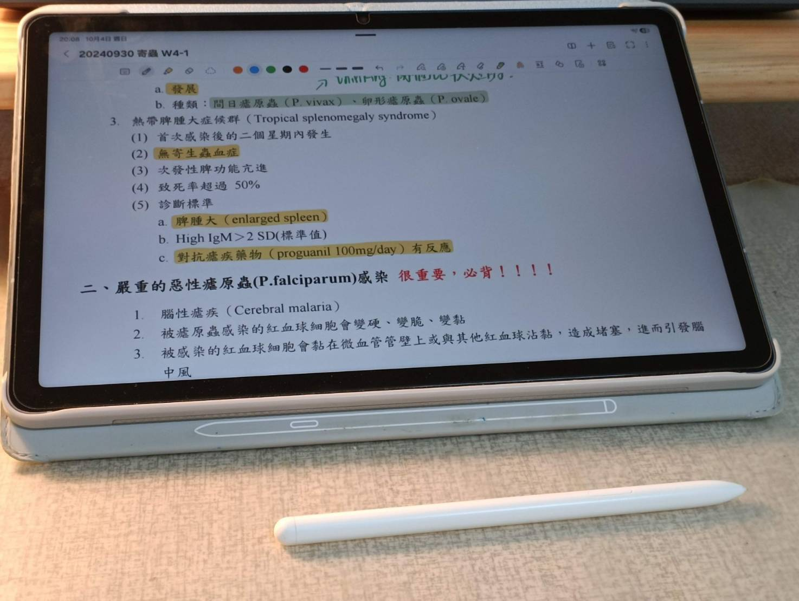
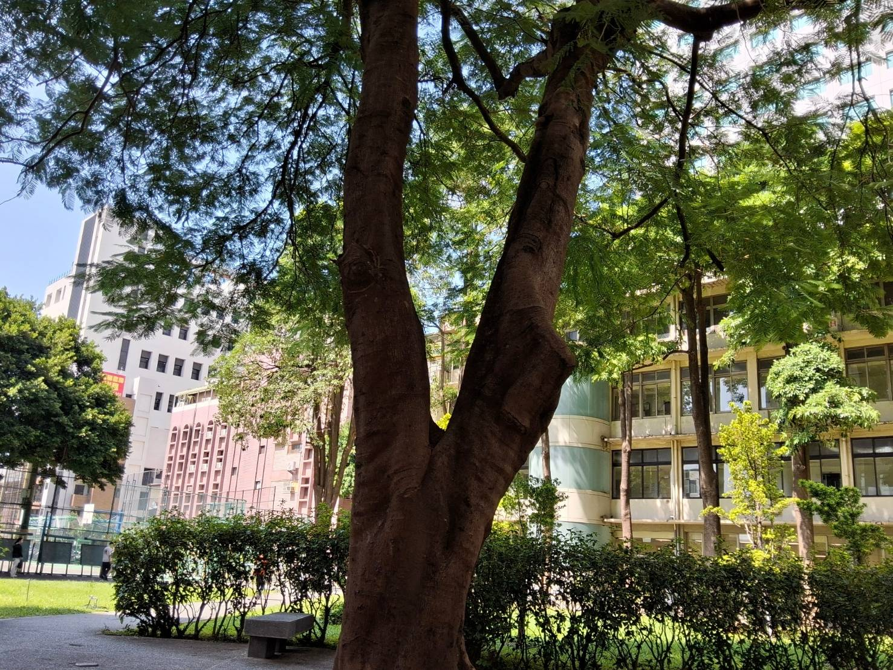
02
文字與創作Writing & Thoughts
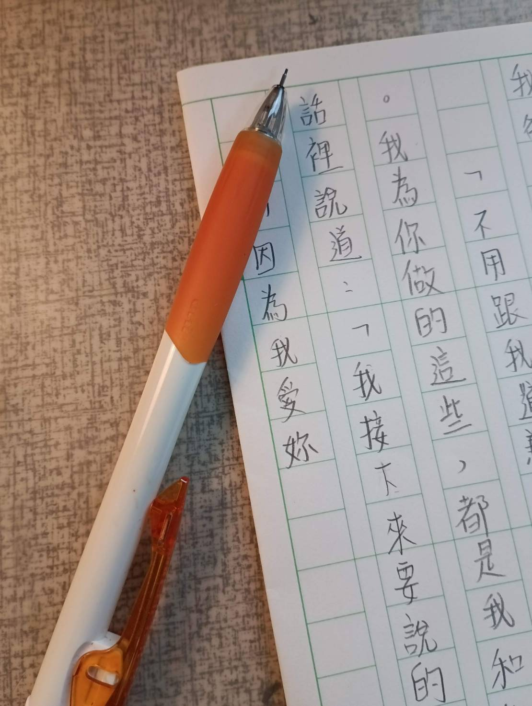
我沒有要追求無人能敵的境界，不過在時光的洪流間，追逐喜歡的事情又何嘗不可。細數國小到現在，寫作確實陪了我很久很久，也跟著我走過了無數低谷與高峰。
看似透明無形，卻在無意間提供了我避風港，讓我能在打字與紙筆的摩娑間，尋到屬於自己的一分靜謐。因為喜歡，所以找不到放棄的理由啊。
03
夕陽Sunset Memories
我一直覺得，日出是早起之人的福利，但日落，卻是所有人都能享受的幸福。明亮與暗沉交雜在一起，墨藍、魚肚白、淺紫、深紅、金黃……還有垂掛在天邊，橙黃卻帶點血色的夕陽。那一刻，我的眼睛濕潤了起來。
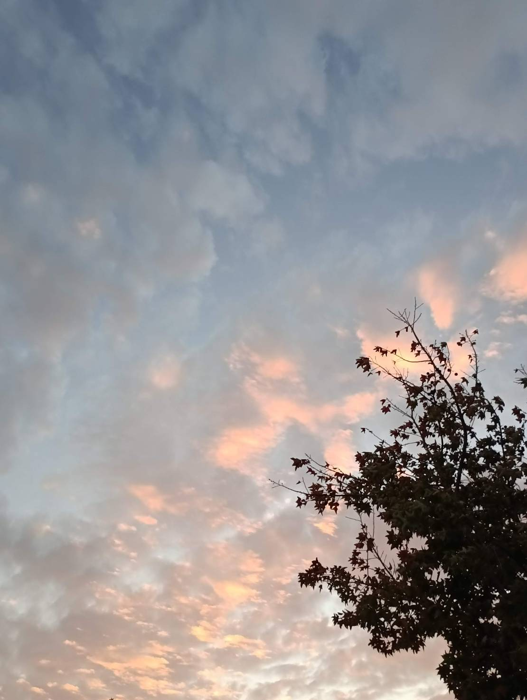
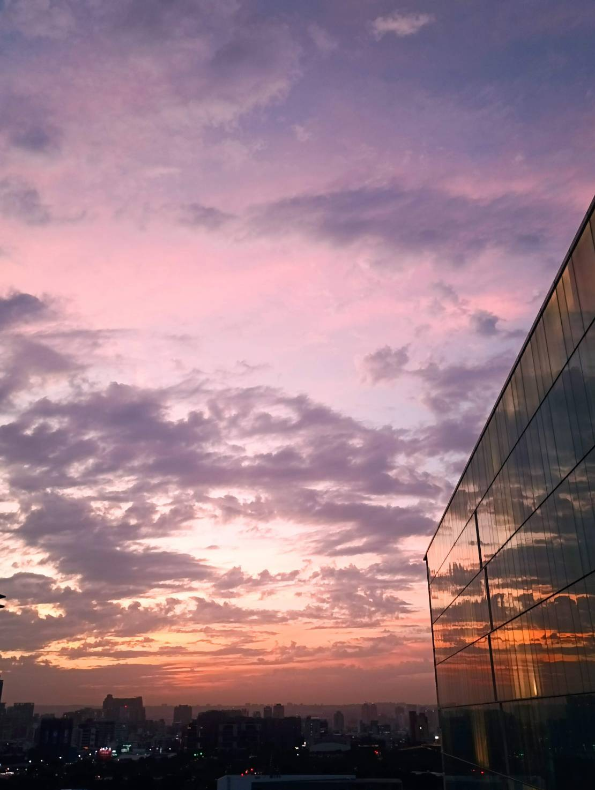
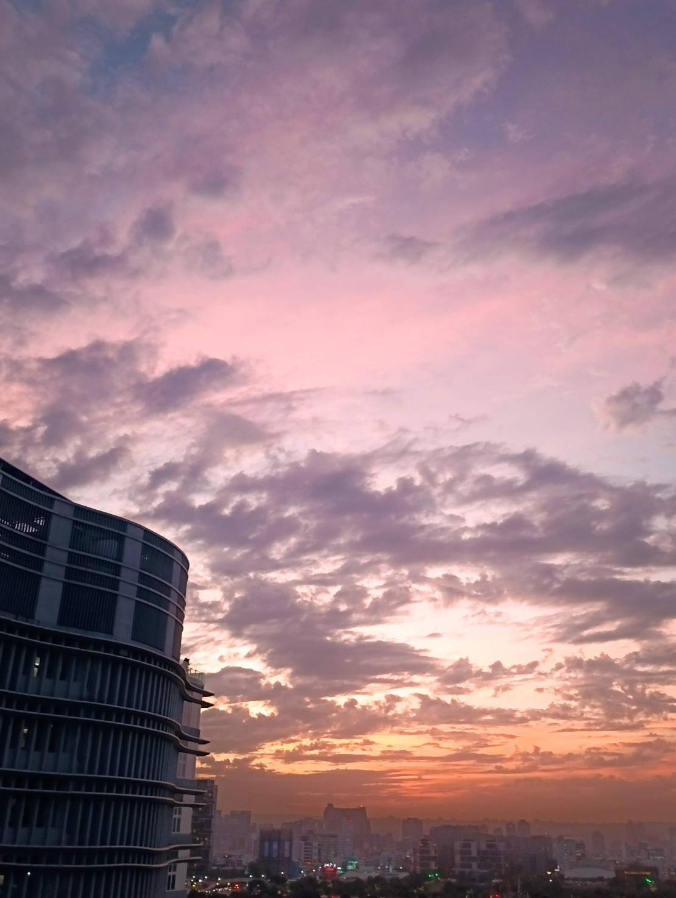
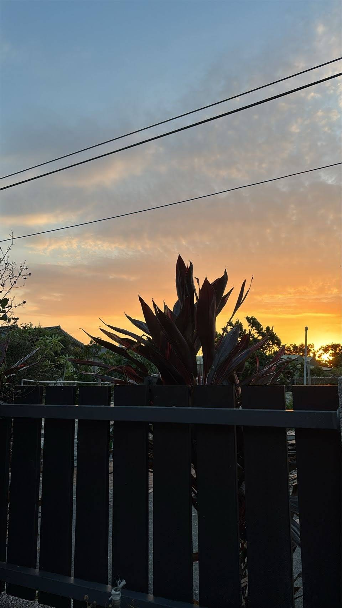
04
生活與記憶碎片Life Fragments
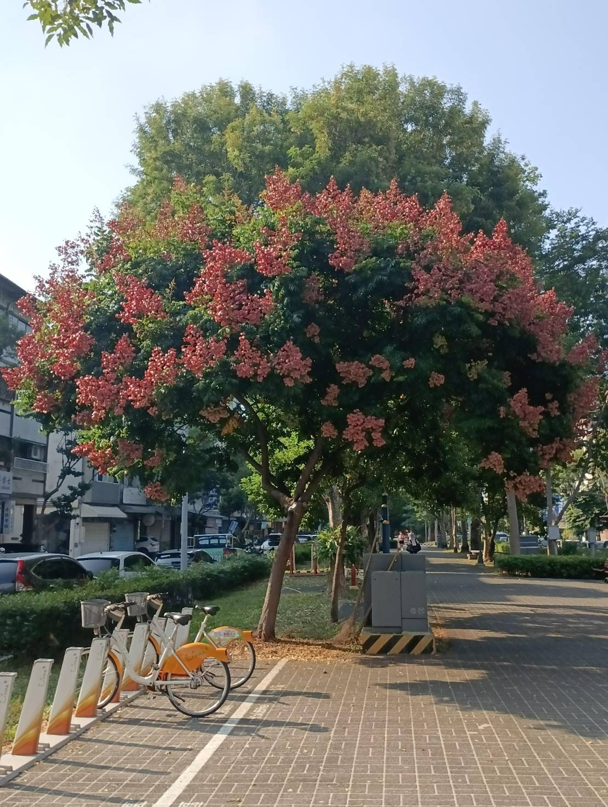
樹懂我，他沒有說什麼，頂多隨著秋風的節奏抖動樹葉沙沙作響兩聲，但我可以感到自己的悲傷被一點一滴吸收、我聽得見遠方歸巢的鳥兒在鳴叫。
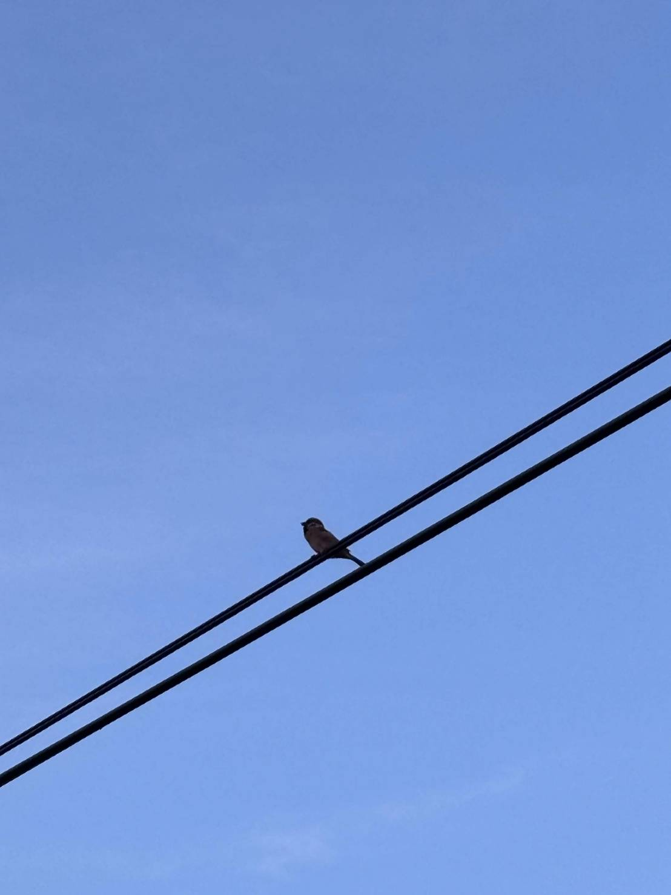
05
爵士鼓與音樂Music & Drums
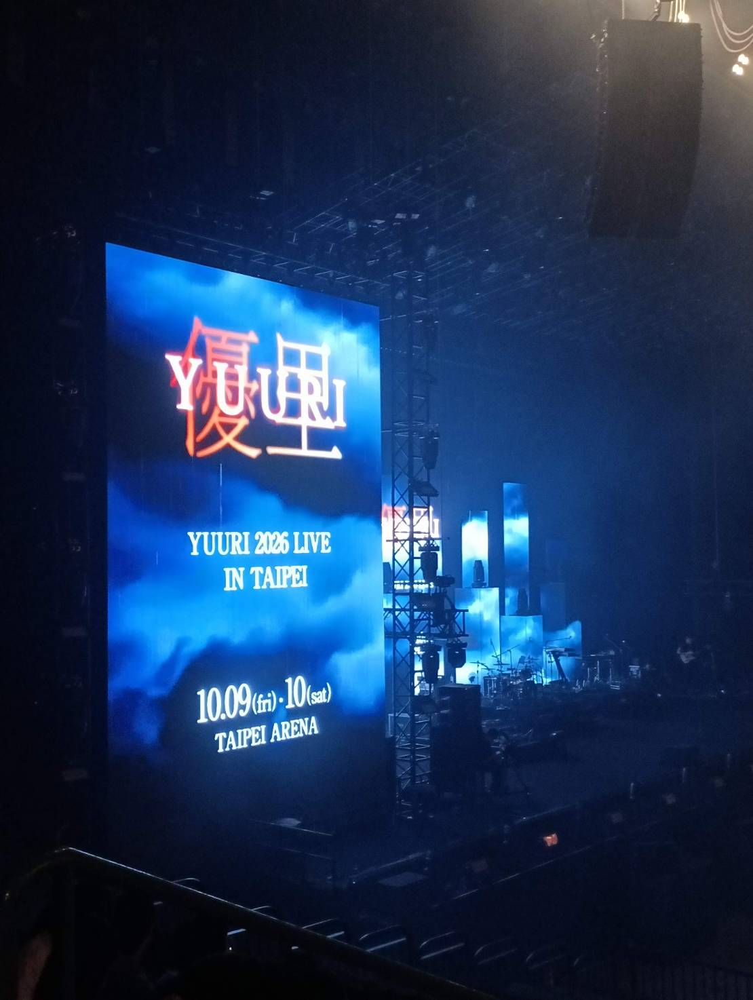
總覺得那段時光很奇妙，沒有大喜大悲，卻有著滿滿的幸福。眼前的那個人，是我在筆電裡、手機裡、收音機的音樂模式裡聽過了幾百遍歌曲，帶給我好多好多情緒的人，就站在我面前，唱歌給我聽，這本身就是一種最大的幸福了。
第一次注意到優里，是因為他的ベテルギウス跟ドライフラワー，當時我反覆聽了幾次，只覺得這個人的歌聲，彷彿可以傳進我的心裡。他每一首歌都用靈魂歌唱的方式，好像我每次全力以赴的樣子。
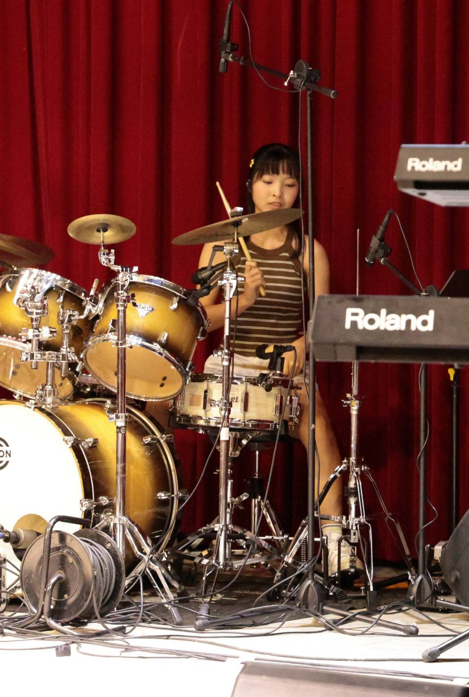
我喜歡舞台上的燈光跟氛圍，喜歡在打到靈魂出竅的時候，看台上每個人認真努力的樣子，也看下方觀眾跟黑暗裡若隱若現的工作人員炒氣氛的模樣。回神啊的一聲發現自己不小心打錯的同時，裝沒事趕快接下去。原來真的只要沉浸在音樂中，陶醉在舞台上的那一秒，表演得怎樣其實通通都不重要了。
——『當你把努力的價值放在舞台上的微笑時，你就真正自由了。』